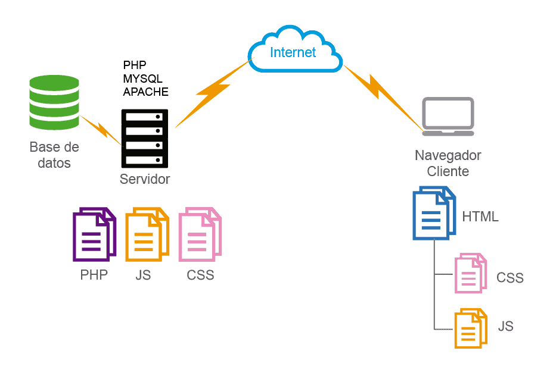
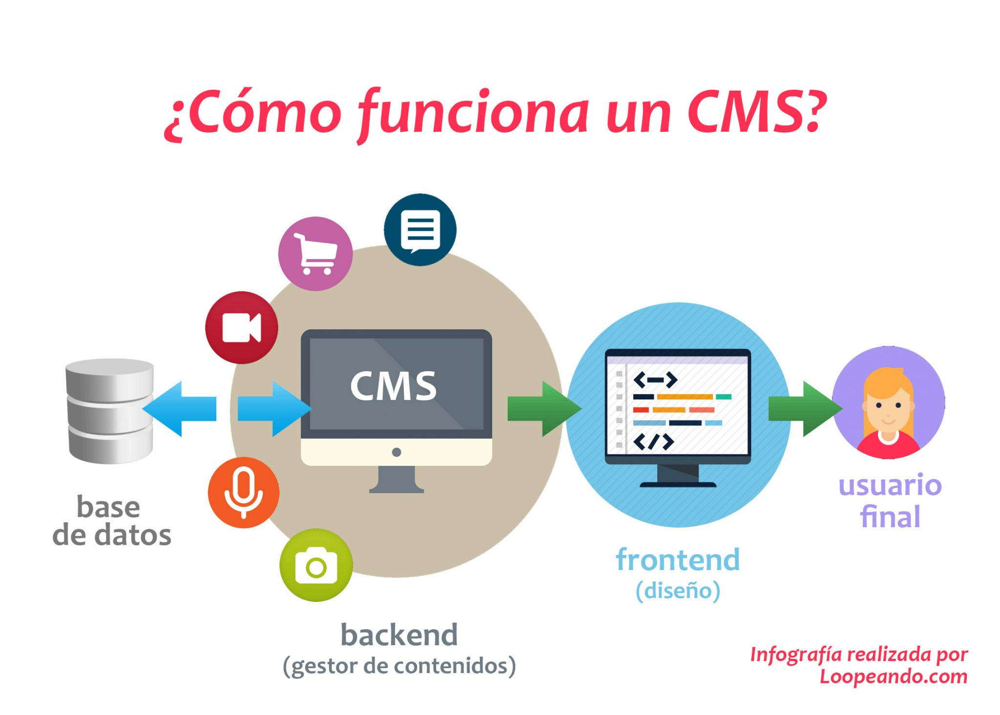

UT2. GESTORES DE CONTENIDOS (CMS) ¶
FICHA TÉCNICA DE LA UNIDAD ¶
| Resultados de Aprendizaje (RA) | RA1: Instala gestores de contenidos, identificando sus aplicaciones y configurándolos según requerimientos. |
| Criterios de Evaluación (CE) | RA1: c, e, f, h, i, j |
| Tiempo | Total: 20 horas (Teoría: 3 h / Práctica: 17 h) |
¶
ÍNDICE DE CONTENIDOS ¶
1. INTRODUCCIÓN Y CONTEXTUALIZACIÓN
2. CONCEPTO Y FUNCIONES DE UN CMS
5. CRITERIOS PARA LA SELECCIÓN DE UN CMS
1. INTRODUCCIÓN Y CONTEXTUALIZACIÓN ¶
1.1. Objetivos de la unidad ¶
El objetivo fundamental de esta unidad es capacitar al alumnado para implantar, personalizar y administrar sistemas gestores de contenidos (CMS) de forma autónoma y segura. En el tejido empresarial actual, la presencia en la web ya no se gestiona mediante código crudo modificado a mano en cada actualización, sino a través de plataformas que automatizan el ciclo de vida de la información digital. Un técnico de soporte informático debe dominar la infraestructura subyacente que sostiene estas aplicaciones para responder ante problemas de instalación, configuración de extensiones, asignación de permisos y directivas de seguridad.
1.2. Relación Curricular ¶
Esta unidad didáctica se conecta de forma directa con los siguientes módulos del ciclo formativo:
-
Implantación de Sistemas Operativos (1º SMR): Aporta la base indispensable para la gestión de permisos en sistemas de archivos (como el uso correcto de chmod y chown en Linux) y la administración de servicios del sistema. -
Servicios en Red (2º SMR): Concurre de manera simultánea en la configuración de la resolución de nombres de dominio (DNS) y los protocolos de transferencia de archivos (FTP/SFTP) necesarios para la puesta en producción y publicación del gestor.
-
Seguridad Informática (2º SMR): Proporciona los conceptos de confidencialidad, integridad y disponibilidad aplicados aquí al endurecimiento (hardening) del CMS frente a vulnerabilidades.
2. CONCEPTO Y FUNCIONES DE UN CMS ¶
2.1. Evolución de la Web: De páginas estáticas a dinámicas ¶
En los inicios de la web, la creación y edición de sitios se realizaba mediante archivos estáticos escritos directamente en lenguajes como HTML y editados mediante herramientas básicas o suites tradicionales. Modificar el menú global de un portal de 180 páginas implicaba editar manualmente 180 archivos de texto estructurado, un proceso propenso a fallos y con costes de mantenimiento inasumibles.
La aparición de los lenguajes de script de servidor (principalmente PHP) y los sistemas gestores de bases de datos relacionales propició el nacimiento de la página web dinámica. En este entorno, el archivo físico con el texto de la noticia no existe en el almacenamiento del servidor; la información se aloja de forma estructurada en tablas de una base de datos. Cuando un cliente solicita una URL, el servidor web recupera los datos dinámicamente y renderiza el código HTML resultante en tiempo de ejecución.
2.2. Funciones básicas de un gestor de contenidos ¶
Un CMS es una herramienta software de nivel de aplicación que permite crear, organizar, administrar y publicar documentos digitales y otros contenidos multimedia de forma colaborativa. Su principal aportación metodológica es que separa claramente la capa de datos e información de la capa de presentación y diseño.
Las cuatro funciones esenciales de cualquier CMS corporativo son:
-
Creación de contenidos: Ofrece entornos de edición accesibles para personal no técnico sin requerir conocimientos de lenguajes de marcado complejos. Utiliza editores visuales potentes que previsualizan el resultado estructural en tiempo real.
-
Gestión de contenidos: Almacena de manera indexada los metadatos de la información (autoría, fecha de publicación, última modificación, categoría y etiquetas de taxonomía) facilitando la organización interna y la reutilización de componentes.
-
Publicación de contenidos: Controla el ciclo de vida del documento, permitiendo guardar borradores de forma automatizada o programar la visibilidad pública para una fecha y hora específicas utilizando plantillas homogéneas para todo el sitio web.
-
Presentación del gestor: Expone la interfaz de administración del núcleo del sistema operativo del CMS para configurar parámetros de localización fundamentales como el huso horario, los idiomas activos o el formato de moneda base.
3. CLASIFICACIÓN DE LOS CMS ¶
3.1. Según su uso o funcionalidad principal ¶
Los gestores de contenidos se han especializado para optimizar los flujos de trabajo específicos de diferentes modelos de negocio o servicios web:
-
Propósito general / Portales institucionales: Diseñados para estructurar de manera jerárquica portales corporativos de alta complejidad, con sistemas avanzados de menús y taxonomías. Ejemplos: Joomla, Drupal.
-
Plataformas de Bitácoras (Blogs): Optimizados para la publicación continua de contenidos informativos organizados de manera cronológica inversa (las entradas más recientes aparecen en primer lugar). Ejemplo original: WordPress (hoy evolucionado a propósito general) o Blogger.
-
Sitios de desarrollo colaborativo (Wikis): Repositorios de documentación donde múltiples usuarios editan el contenido de forma concurrente, manteniendo un control estricto del historial de revisiones para auditoría informática. Ejemplos: MediaWiki, DokuWiki.
-
Gestores de comercio electrónico (E-Commerce): Orientados específicamente a la construcción de tiendas virtuales, integrando pasarelas de pago seguro, control logístico de inventariado y bases de datos transaccionales de clientes. Ejemplos: PrestaShop, Magento.
-
Sistemas de gestión de aprendizaje (LMS - E-Learning): Plataformas web dedicadas a la formación a distancia estructuradas mediante cursos virtuales, herramientas de comunicación asíncrona, entrega de actividades y cuadernos de calificación centralizados. Ejemplo de referencia institucional en Andalucía: Moodle Centros.
3.2. Según su tipo de licencia ¶
El análisis de costes de licenciamiento es un factor determinante en la toma de decisiones tecnológicas de la empresa:
-
Licencia Pública General (GPL / Código Abierto): Software de distribución libre que permite al técnico inspeccionar el código fuente, modificarlo sin restricciones legales para adaptarlo a la empresa y redistribuirlo de forma gratuita.
-
Software Privativo: Aplicaciones comerciales con código cerrado cuyo uso está sujeto al pago de licencias por volumen o suscripción. Está terminantemente prohibido alterar el núcleo de la aplicación.
-
Freeware / Shareware: Modelos mixtos comunes en entornos cloud. Permiten el uso sin coste de versiones básicas limitadas en capacidades de almacenamiento o funcionalidades técnicas, requiriendo un pago (upgrade) para desbloquear características avanzadas de nivel Enterprise.
4. ARQUITECTURA Y TECNOLOGÍAS ¶
4.1. El stack tecnológico web de referencia ¶
La inmensa mayoría de los gestores de contenidos de código abierto se despliegan sobre arquitecturas de tres capas bien definidas, típicamente representadas por el acrónimo LAMP (Linux, Apache, MySQL, PHP) o variantes con contenedores modernos:

-
Servidor Web (Capa HTTP): Encargado de despachar el contenido estático y reenviar las peticiones dinámicas al procesador de scripts. Los estándares de la industria son Apache HTTP Server y Nginx.
-
Servidor de Aplicaciones (Intérprete de Backend): Lenguaje encargado de ejecutar las directivas lógicas del gestor, verificar las sesiones de usuario y procesar la información del sistema de archivos. PHP domina de forma absoluta este sector tecnológico.
-
Servidor de Base de Datos Relacional: Motor encargado del almacenamiento físico permanente de la configuración global del sitio, las credenciales cifradas, los textos de los artículos y los comentarios. Los sistemas de referencia obligados son MySQL y MariaDB.
4.2. Estructura interna: Separación de frontend y backend ¶
Un aspecto arquitectónico clave que el alumnado debe comprender es el aislamiento funcional de los entornos del gestor:
-
Frontend: Representa la cara pública de la aplicación. Es la interfaz visible que renderiza el navegador web del visitante, construida mediante estándares limpios de HTML5, hojas de estilo CSS3 y scripts de cliente JavaScript. Su diseño visual y adaptabilidad (responsive) dependen del tema o plantilla instalada.
-
Backend: Constituye la consola o panel privado de administración restringido exclusivamente a los usuarios con privilegios técnicos. Desde este entorno se monitorizan los logs del sistema, se gestionan las actualizaciones críticas de seguridad, se instalan extensiones y se gestionan los roles de acceso.

5. CRITERIOS PARA LA SELECCIÓN DE UN CMS ¶
A la hora de asesorar a una organización sobre qué plataforma implantar, el técnico informático no debe basarse en preferencias personales, sino evaluar de forma analítica los siguientes parámetros de viabilidad:
| Parámetro Técnico | Aspectos Clave a Evaluar |
| Arquitectura de Persistencia |
Compatibilidad nativa del software con el SGBD corporativo ya desplegado en la infraestructura de la empresa (ej: MariaDB, PostgreSQL, SQL Server) . Aspectos Clave a Evaluar: Arquitectura de Persistencia. Compatibilidad nativa del software con el SGBD corporativo ya desplegado en la infraestructura de la empresa (ej: MariaDB, PostgreSQL, SQL Server) Soporte y Comunidad. Frecuencia de publicación de parches de seguridad oficiales, hoja de ruta (roadmap) del software y existencia de documentación técnica oficial de calidad Ecosistema de Extensiones. Disponibilidad de módulos o plugins listos para implantar que cubran los requerimientos del cliente sin necesidad de programar código a medida desde cero. Modelo de Permisos y Roles. Capacidad del CMS para crear perfiles granulares (ej. Administrador, Editor, Autor, Suscriptor) limitando el acceso según el principio de mínimo privilegio. Políticas de Copias de Seguridad. Facilidad para automatizar backups en caliente tanto del sistema de archivos (uploads, temas) como del archivo estructurado .sql de la base de datos |
| Soporte y Comunidad | Frecuencia de publicación de parches de seguridad oficiales, hoja de ruta (roadmap) del software y existencia de documentación técnica oficial de calidad |
| Ecosistema de Extensiones | Disponibilidad de módulos o plugins listos para implantar que cubran los requerimientos del cliente sin necesidad de programar código a medida desde cero |
| Modelo de Permisos y Roles | Capacidad del CMS para crear perfiles granulares (ej. Administrador, Editor, Autor, Suscriptor) limitando el acceso según el principio de mínimo privilegio |
| Políticas de Copias de Seguridad | Facilidad para automatizar backups en caliente tanto del sistema de archivos (uploads, temas) como del archivo estructurado .sql de la base de datos |
6. INTRODUCCIÓN A WORDPRESS ¶
6.1. Características principales ¶
WordPress es, estadísticamente, el CMS de código abierto más utilizado a nivel global en internet para el despliegue de portales web corporativos y blogs. Publicado bajo licencia pública general GPL y desarrollado principalmente sobre el lenguaje PHP, ofrece una gestión simplificada vía web al tiempo que expone una infraestructura interna altamente modular y escalable para administradores de sistemas.
Es obligatorio que el técnico informático diferencie con precisión absoluta el origen del servicio:
-
WordPress.org: Descarga directa del paquete de software libre (.zip) para ser implantado de forma local o en servidores cloud controlados en su totalidad por el administrador. Ofrece libertad técnica absoluta de configuración.
-
WordPress.com: Servicio comercial de alojamiento gestionado (SaaS) en la nube propiedad de la empresa Automattic. Cuenta con severas limitaciones de configuración en sus niveles gratuitos. En el desarrollo de este módulo trabajaremos exclusivamente con soluciones basadas en WordPress.org.
6.2. Componentes básicos del ecosistema WordPress ¶
Para la posterior fase práctica de taller, identificamos los tres pilares lógicos que forman la estructura de archivos de la plataforma]:
-
El Núcleo (Core): Conjunto de archivos PHP estándar suministrados oficialmente por WordPress que implementan las funciones del motor del gestor, el tratamiento de consultas a la base de datos MySQL/MariaDB y la lógica del panel de administración privado.
-
Los Temas (Themes / Plantillas): Archivos de estilos y maquetación encargados exclusivamente de definir la apariencia estética de la web de cara al público (frontend) sin alterar en ningún caso los datos reales almacenados en las tablas de la base de datos.
-
Las Extensiones (Plugins): Componentes software adicionales creados por la comunidad de desarrolladores que se integran en el sistema base para añadir nuevas capacidades técnicas que el núcleo no incorpora de serie (ej: herramientas de optimización SEO, firewalls a nivel de aplicación web, sistemas de almacenamiento en caché distribuidos, etc.)